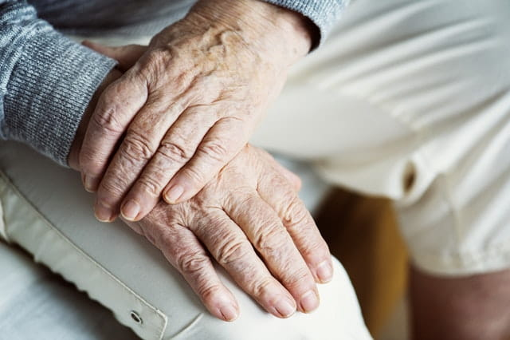
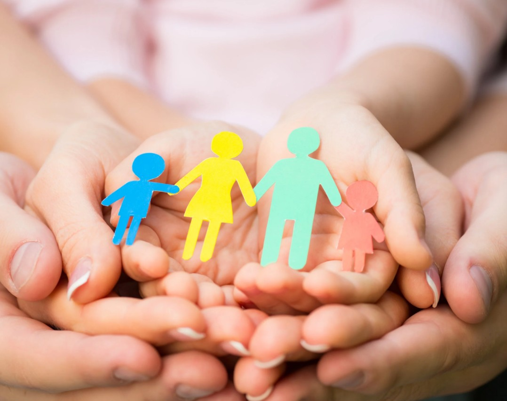
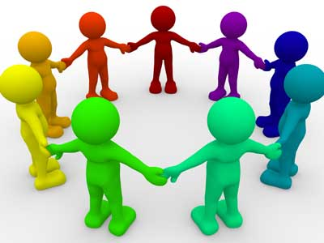

Animations et ateliers
J’interviens auprès de publics variés à travers des ateliers mêlant nature, expression artistique et bien-être.
Chaque proposition est pensée pour s’adapter aux besoins, aux capacités et aux contextes des participants.
Découvrez les animations proposées selon les publics :

EHPAD & structures médico-sociales
Ateliers sensoriels, apaisants et adaptés aux capacités de chacun.
Scolaires
Animations pédagogiques autour de la nature, de la biodiversité et de la création.

Grand public
Ateliers accessibles à tous, favorisant la découverte, le partage et la créativité.

Structures sociales & groupes
Ateliers collectifs favorisant le lien social, l’expression et la coopération.
Animations sur mesure
Chaque projet étant unique, je propose également des interventions sur mesure.
Les ateliers peuvent être adaptés en fonction du public, des objectifs (bien-être, expression, sensibilisation…), du lieu et des contraintes spécifiques.
N’hésitez pas à me contacter pour échanger autour de votre projet et co-construire une intervention adaptée.
Vous souhaitez organiser un atelier ?
Contactez-moi pour en discuter